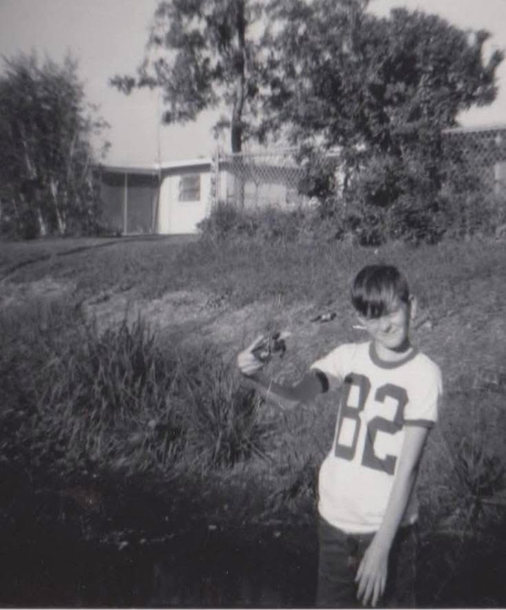
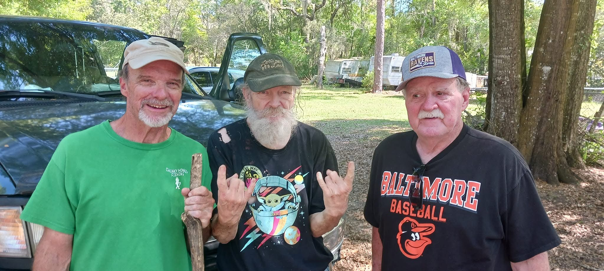
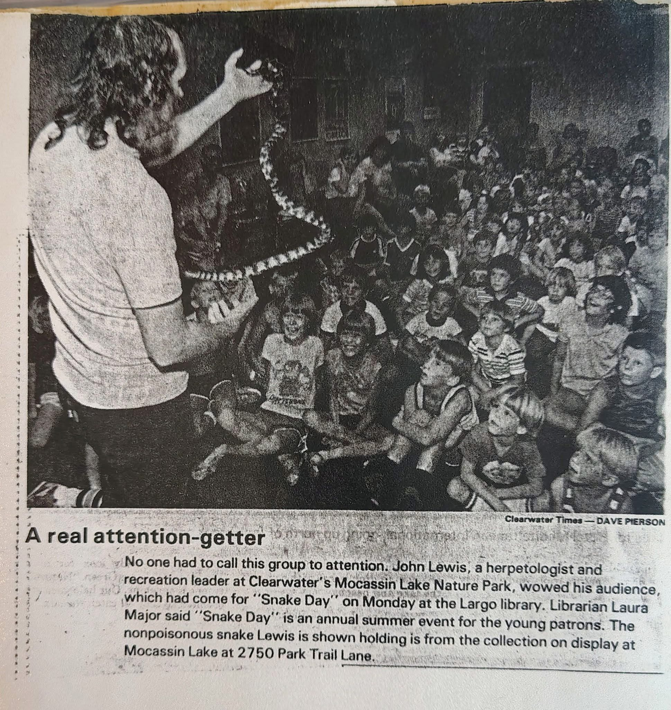

His Love For Animals
John's love for animals is as big as his heart, and his stories about them are just as colorful as his comic book collection.

John has always had a soft spot for animals, especially turtles. He has owned several turtles over the decades, and each one has had its own unique personality and quirks. John loves to share stories about his turtles, from their favorite foods to their amusing antics. He often talks about how his turtles have taught him patience and responsibility, as they require regular care and attention. John's love for animals extends beyond just his pets; he is also an advocate for animal welfare and often volunteers at local shelters. His passion for animals is evident in the way he cares for them and the joy they bring to his life.

John's love for animals is not limited to just turtles. He has also had dogs, cats, and even a few exotic pets over the years. Each animal has a special place in John's heart, and he often shares stories about their unique personalities and the joy they bring to his life. John's love for animals is a testament to his compassionate nature and his ability to find joy in the simple things in life. Whether it's a turtle basking in the sun or a dog wagging its tail, John finds happiness in the company of animals and cherishes the bond he shares with them.


John has also shared his passion with others. He has been known to give demonstrations and talks about reptiles and other animals at local libraries and community centers. John enjoys educating people about the importance of animal care and conservation, and he often encourages others to develop a love for animals as well. His dedication to sharing his knowledge and passion for animals is just another example of his generous spirit and his desire to make a positive impact on the world around him.

Categories: COMIC BOOKS, Collecting
Tags: #ComicsCulture #TreasureHunting #VeteranWisdom